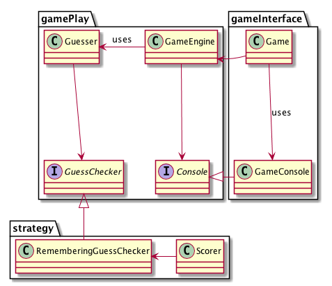

Activity 6-4: The Single Responsibility Principle
Interjecting segments of the SRP video (only available in class or by purchase).
Overview
01:00-03:55 overview
Responsibility
10:05-16:18 responsibility
- What is a responsibility?
- What would be a sign that a class or function has too many responsibilities?
- How is an actor different from a user?
- How are actors related to change in the software?
- (Group discussion) Thinking back to our grading example, what are some of the different responsibilities we might have? Who are the corresponding actors?
The two values of software
16:18-20:00 the two values of software
- What is the secondary value of software? When is it achieved?
- What is the primary value of software? When is it achieved?
- What is the primary responsibility of programmers?
20:00-27:50 Friction
- What discipline would make software easier to maintain and enhance?
- What is the problem with a module that has too many responsibilities?
- What is the fan out of a class? What is the fan in?
- Why is it important to reduce the fan-out of a class?
- What is one way to achieve reduce the fan-out of a class?
- What is collocation of responsibilities? How does it affect the various actors?
- What code smell is the likely result of this collocation of responsibilities?
The Single Responsibility Principle
27:50-30:21 single responsibility principle (SRP)
- What does the SRP say? What are some examples of this?
- 30:21-32:10 Example 1 Discussion
- 32:10-33:27 Example 2 Discussion
- 33:27-35:52 Example 3 Discussion
- 35:52-41:15 Example 4 Discussion
- (Group discussion) Does our grading application have any violations of the SRP?
- What is the overall solution to resolving SRP violations?
Break?
Resolving SRP violations
41:15-48:05 solutions
- In problems related to SRP, there are a number of competing interests:
- Separating responsibilities into different classes
- Separating actors from the concrete implementations of their responsibilities
- Avoiding transitive dependencies between actors
- Making functions easy to find
How do the following techniques balance these interests out: dependency inversion, extracting classes, the facade pattern, interface segregation
Mastermind: A case study
48:05-51:50 The game of mastermind
- What are the actors and responsibilities in this game?
51:50-53:45 Discussing the three actors
- List the actors presented in the video and describe the corresponding responsibilities.
53:45-57:00 Details on Mastermind game implementation

57:00-1:00:15 Faking a rational design process
- How did Uncle Bob come about his design for the Mastermind Game?
- Why do unit tests tend to align with actors? What is the advantage of this?
- When should we draw design diagrams?